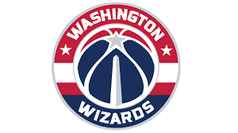

Washington Wizards (en idioma español: Hechiceros de Washington) es un equipo profesional de baloncesto de la NBA con sede en la capital de Estados Unidos, Washington D. C.
Un balance de 60 victorias y 22 derrotas permitió a los Bullets regresar a los playoffs en la Temporada 1974-75, con un balance en casa de 36-5. En primera ronda sobrevivieron a un agotador duelo a 7 partidos contra Buffalo Braves, y en la final de la Conferencia Este eliminaron a los vigentes campeones, Boston Celtics, en 6 partidos, accediendo a la gran final. En ella los Bullets partían como favoritos ante Golden State Warriors, pero éstos, liderados por Rick Barry, los arrollaron por 4-0.
Los Wizards fueron conocidos hasta 1997 como Bullets (balas en español), pero cambiaron su nombre para evitar asociaciones con la criminalidad que dañasen la imagen de la ciudad de Washington.1 Ganaron el campeonato de la NBA en 1978, finalizando además subcampeón en la temporada siguiente. Desde su fundación en 1961, la franquicia ha pasado por tres ciudades: Chicago, Baltimore y Washington. Su terreno de juego es, desde 1997, el Capital One Arena, pabellón con capacidad para 20.356 espectadores. Además, el considerado por muchos mejor jugador de la historia, Michael Jordan,2 jugó en el equipo entre 2001 y 2003.
 Indice
Indice